I leave Albares on my way to Guadalajara and in between I take the opportunity to see some of the most important towns with the most history through which the A6 passes, a highway that connects Madrid with La Coruña. We begin with Benavente, the second municipality with the most inhabitants in the province of Zamora. I would start by visiting the Plaza Santa María, seeing the most important church in the city, Santa María del Azogue. The exterior and especially seen from the apse you can appreciate the Romanesque style since it dates from the twelfth century. As early as the 16th century, changes were made to the interior, such as the Gothic ribbed vaults.
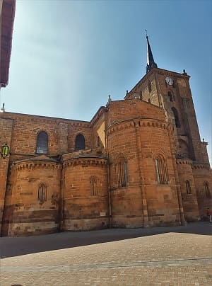
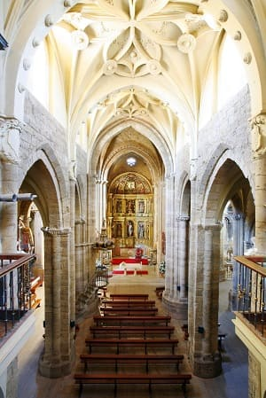
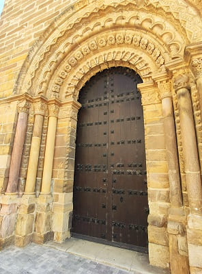
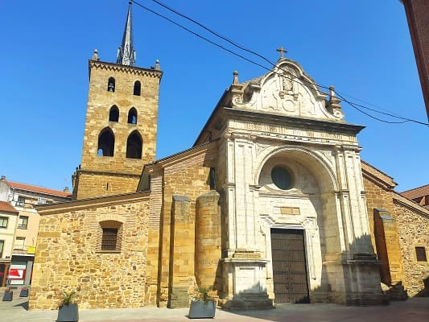
Then it would go to the most important civil building in Benavente, the castle of La Mota, today converted into a National Parador.
This building would witness one of the most important events in the history of Spain, in 1230 the union of the kingdom of León and the kingdom of Castile would become effective under the reign of Fernando III in the so-called "concord of Benavente" .
The highlight of the building is the Torre del Caraco, which has inside one of the best preserved Mudejar coffered ceilings, which was moved from the sanctuary of San Román del Valle in 1970 and dates from the 15th century, and the church of Santa María of the Romanesque quicksilver. Next to the hostel there is a large park where Solita's house is, which is very large and you can enjoy beautiful views of the entire valley. This building in the fifteenth century would change its defensive function for its residential function, being inside more a palace than a castle. The predominant styles are Gothic and Renaissance.
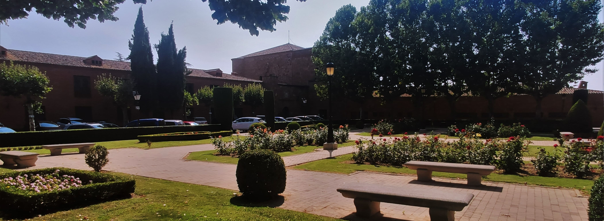
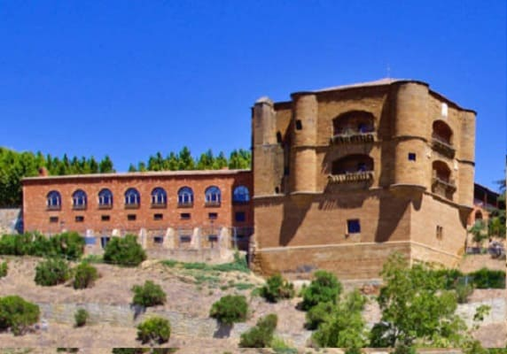
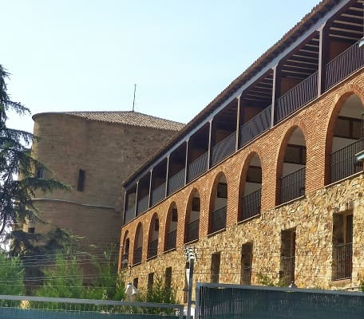
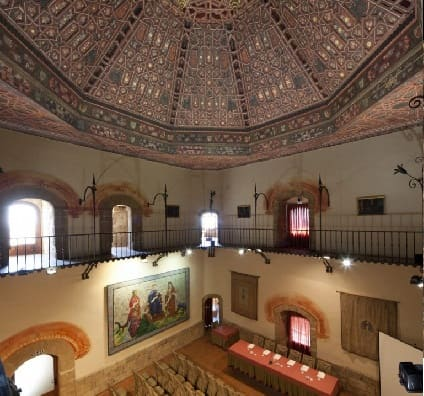
The most representative elements of the historic center and seeing the city are the town hall square.
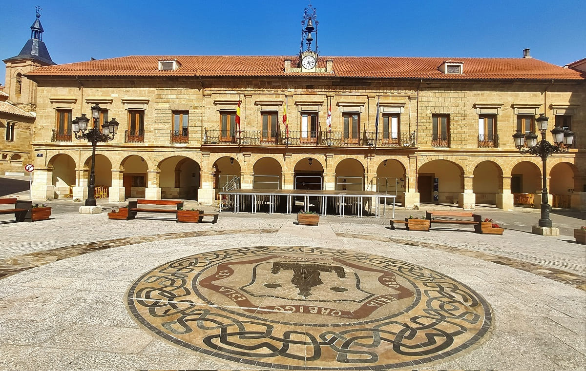
Very close to the church of San Juan del Mercado next door. This Romanesque-style church is from the 12th century, like that of Santa María, although it would be occupied by the Knights Hospitallers of the order of Saint John, hence the name. This church has in the tympanum of the south portico the adoration of the Magi as its most characteristic feature. Certain parts resemble the churches on the Camino de Santiago.
In the street that goes down from the church there are different palaces such as the Cervato house that can be seen in the image.
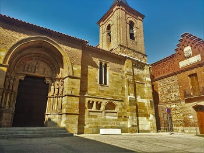
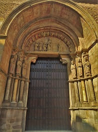
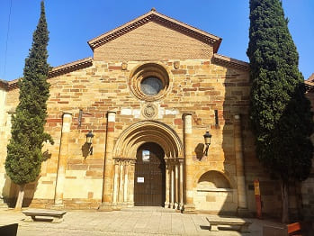
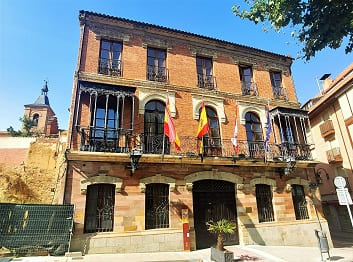

 After visiting Benavente, I will leave for Tordesillas, a historically very important city because the Treaty of Tordesillas was signed between Portugal and Spain for the distribution of land in the conquest of America. Proof of this are the Houses of the Treaty where there is an exhibition of ship models and documents and maps related to the treaty.
After visiting Benavente, I will leave for Tordesillas, a historically very important city because the Treaty of Tordesillas was signed between Portugal and Spain for the distribution of land in the conquest of America. Proof of this are the Houses of the Treaty where there is an exhibition of ship models and documents and maps related to the treaty.
I will start by visiting the church of Santa María in the center of the town, which can be seen in the image. It was built on the old mosque of the town. Its current structure is Gothic, but at the end of the 16th century it was reconsidered in a classicist style emanating from El Escorial. Therefore, the head and the first two bodies of the tower are in the Gothic style, and the rest in the Escorial style, its modifications reaching up to the 18th century. The altarpiece is in the classicist style from the end of the 17th century. The clock tower and the structure of the church that has a defensive air to serve as a fortress during the reconquest stand out.
Then you would arrive at the Plaza Mayor, a square with characteristic Castilian features from the 17th century. Square in structure with two-story buildings.
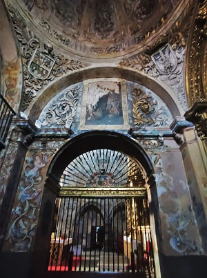
Nearby is the church of San Pedro from the 16th century and in the Gothic style. It has one of the most important chapels in the city, that of the Gaitán, in which there are several praying statues. Several of the Valladolid region would be based on this chapel.
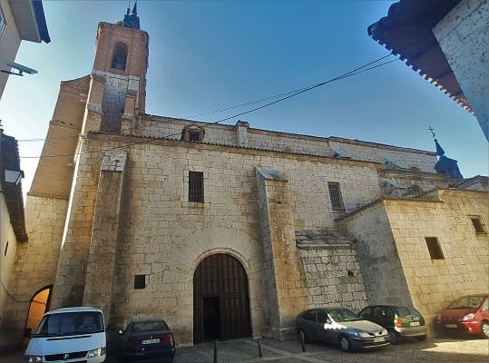
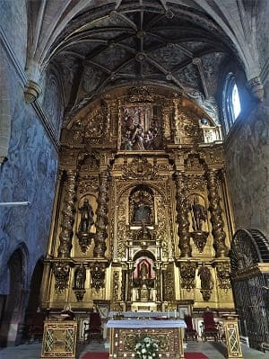
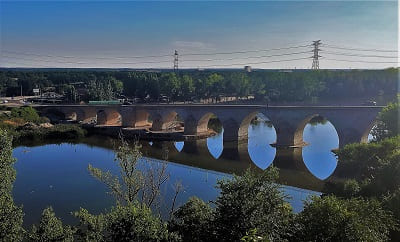
Of great importance is the monastery of Santa Clara, ordered to be built by Alfonso XI in 1370 and the place where Juana La Loca, the mother of Carlos V, lived after the community revolt. It is the most important heritage building in the city. The Gothic church stands out and, as a jewel of the monastery, a wooden coffered ceiling with decorative elements in the shape of pineapples in the Mudejar style in the main chapel. There are also Arab baths in good condition, very similar to those found in Andalusia.
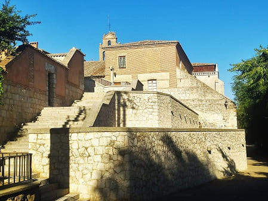
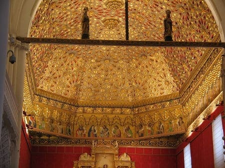
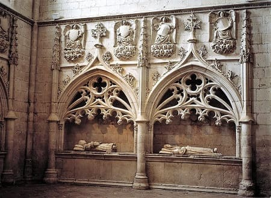
Nearby is the church of San Antolín. This church, like that of San Pedro, was ordered to be built by a nobleman, in this case the mayor of the time. It is from the 16th century and the predominant style is late Gothic. Inside you can see the Renaissance-style altarpiece and the chapel of the Alderete family as well as two other chapels. The paintings inside and the tombs stand out, as well as the spiral staircase that leads to its tower. Today it functions as a Sacred Art Museum that collects pieces from other churches in the area.
Next to the church are the Houses of the Treaty where today there is a museum of navigation and exploration from the 16th century.
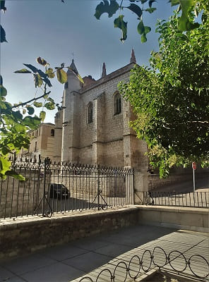
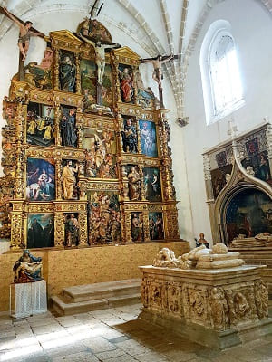
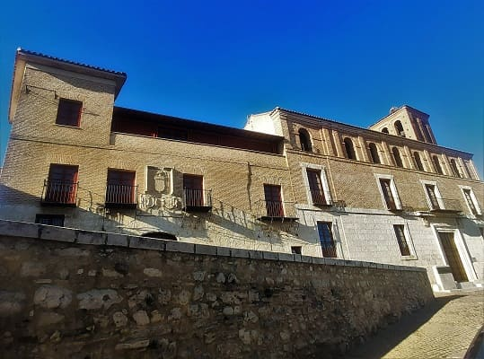
Next to it, the great bridge that crosses the Duero river with no more and less than ten arches. It is said that it is from the 10th century and that it was reformed in the 15th century.
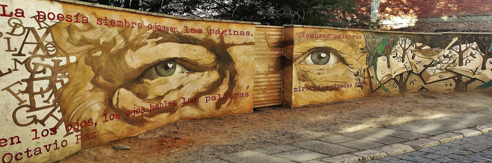
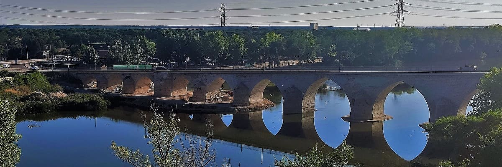
After Tordesillas, I will stop at Medina del Campo, which is worth a visit just by visiting its castle.
The highlight is its great Plaza Mayor, the largest in terms of square meters in all of Spain, where we can find the large collegiate church of San Antolin, the town hall and the royal palace of the testamentary attached to the town hall. This is because part of the buildings were demolished after the fire and the riots of the community members and it was decided to leave that space to house the events of the town. In the photo by order, the collegiate church, the town hall and the Royal Palace of the Testament.
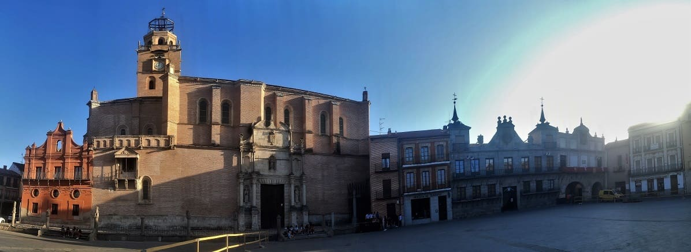
The Royal Palace of the Catholic Monarchs or Royal Palace of the Testament, of Medina del Campo is a palace that was built in the 14th century by the Trastamara and that in the 15th century would be modified by the Catholic Monarchs. Isabel la Católica would die in this palace in 1504.
Medina del Campo in those times was one of the capitals of Castilla as the power of Burgos moved southwards. In this palace there is a museum about Isabel la Católica, her testament and the third Voyage of Christopher Columbus.
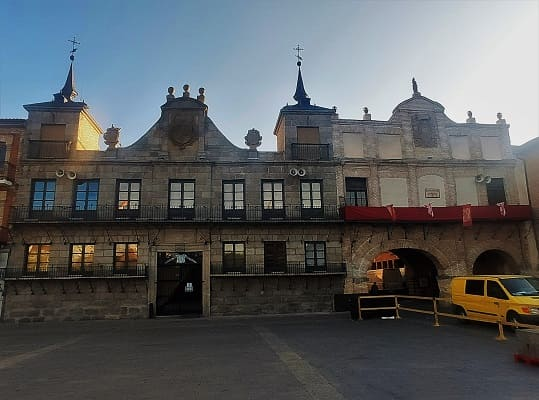
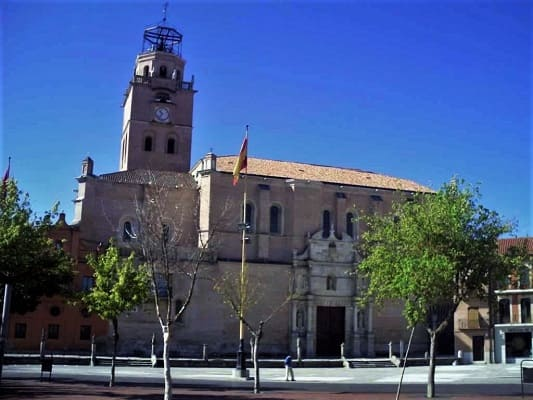
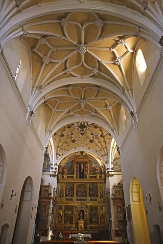
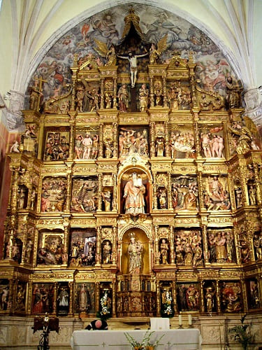
The Collegiate Church of San Antolín is one of the most important buildings in the city. Its dimensions are enormous, especially its height. It was originally Romanesque in style and its name was given to it by the people of Palencia who came to repopulate this area since he is the saint and patron saint of the city there.
In the fifteenth century, after the arrival of the Catholic kings, they thought of building a larger church or rebuilding the existing one, opting for the latter. It will begin at the beginning of the 16th century in the time of Carlos V and the predominant style will be late Gothic, with its ribbed vaults and its columns supporting the vaults as a tree, flowery Gothic. Most of the altarpieces and chapels are in the Baroque style.
The most unique thing about this collegiate church is the balcony of the façade called La Virgen del Pópulo because it is located in that chapel and it was where the masses were given to the people who were working in the market since on fair days the entire Plaza Mayor it was a place of sale.
The main altarpiece corresponds to the late Gothic, which was the first to be finished. Due to the size of this altarpiece, a multitude of artists would participate and there are almost 100 scenes represented from the life of Jesus.
Very close to the collegiate church is the palace of the Admiral. It is an old building erected during the 17th century, on the old houses of the Admirals of Castilla, by the Marquis of Tejada. On the cover is the coat of arms of the marquis surrounded by numerous symbolic and representative elements.
Another important church is Iglesia de San Miguel which is located on the banks of the Zapardiel river. It was built on another smaller Romanesque church from the 12th century. This church is from the 16th century and highlights the central altarpiece with different scenes from the life of Jesus and the choir.
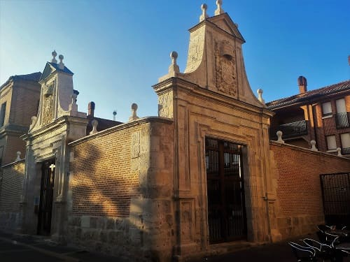
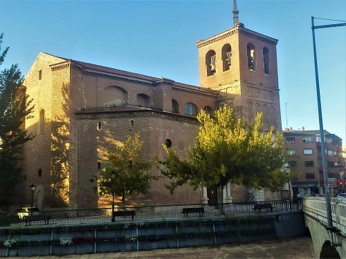
Nearby are the Royal Butchers where cattle fairs were held. It is a Mudejar building that currently functions as a central market with food from the region.
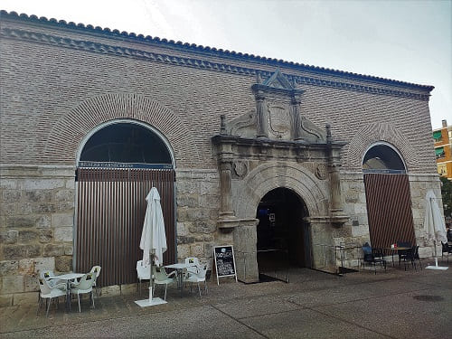
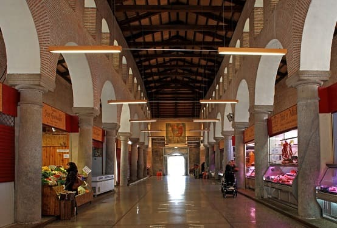
Leaving the outskirts of the town towards the castle of Medina, I find the convent of Santa Clara. Considered the oldest convent complex in Medina documented in the mid-13th century as the monastery of Saint Euphemia, built in turn on a temple dedicated to Saint Catherine, it preserves an extraordinary archive of medieval manuscripts.
The oldest part of the convent is from the 16th century and corresponds to the head of the chapel. The rest of the buildings are no more than half a century old and are the result of the reconstruction carried out by the Franciscan Clarisas mothers after the fire that destroyed the monastery in 1960.
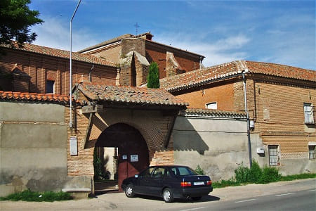
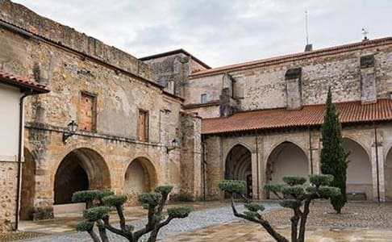
And finally, I will visit the imposing castle of La Mota. This castle originated from the reconquest but would evolve over the years and grow. It was owned by different nobles and even in the town of Medina there were sometimes two groups of nobles who fought each other and the property was alternated. From the 15th century it became part of the Royal family, the Catholic Monarchs, who increased its size and provided it with better defenses. In addition to functioning as a defense and as a residence, there was also a time when it functioned as a prison. It is one of those who best prepared for the artillery warfare of the 17th and 18th centuries. However, already in the 20th century with the arrival of aviation, the fortresses did not make sense and had more of a palatial function than a castle. Together with the castle of Coca and Cuellar, which are also in Castilla y León, they seem to me to be the most impressive castles in Spain.
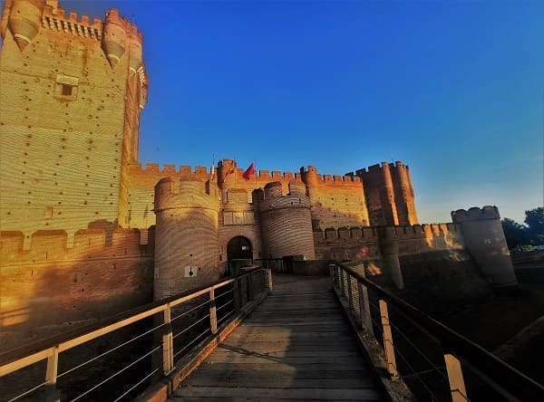
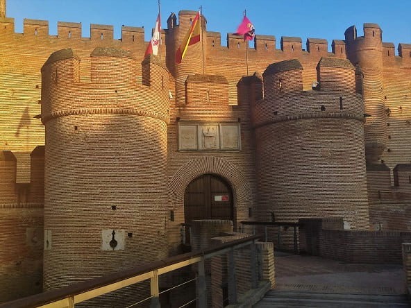
© 2016 - All Rights Reserved - Designed by Sergio López Martínez
El sitio se mantiene gracias a la publicidad, por favor Desactiva Adblock para seguir navegando
He desactivado Adblock![[Valid RSS]](https://www.onepointsync.com/wp-content/uploads/2016/08/valid-rss-rogers.png "Validate my RSS feed")